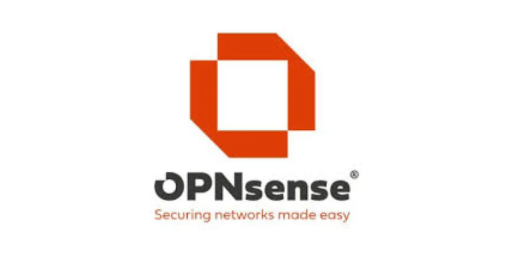
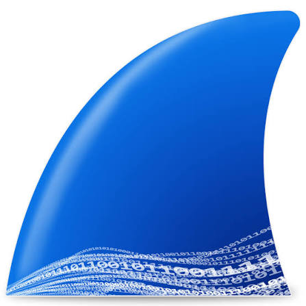
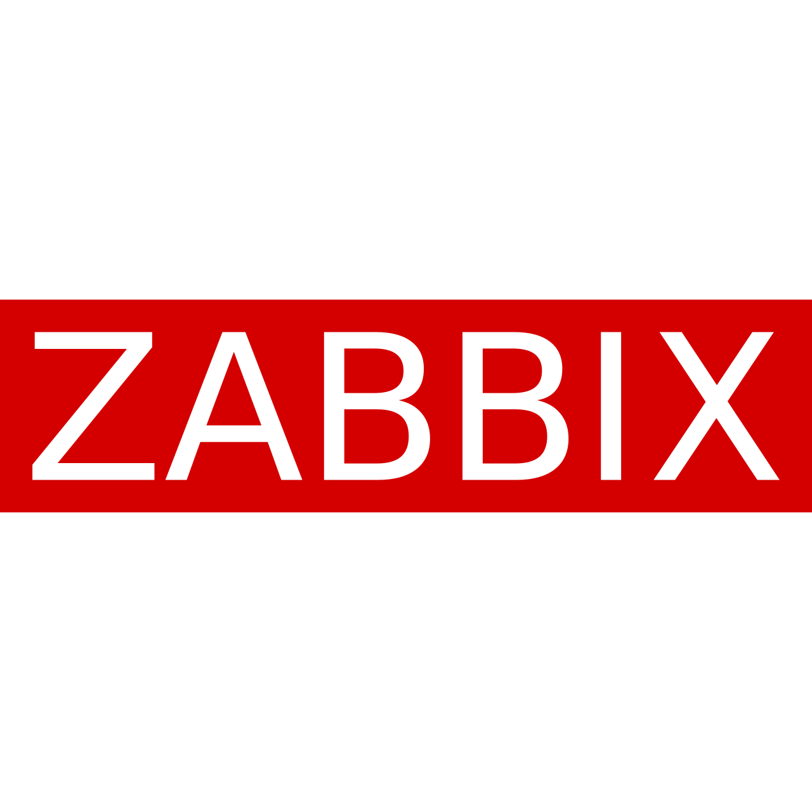
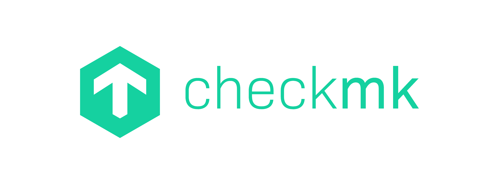
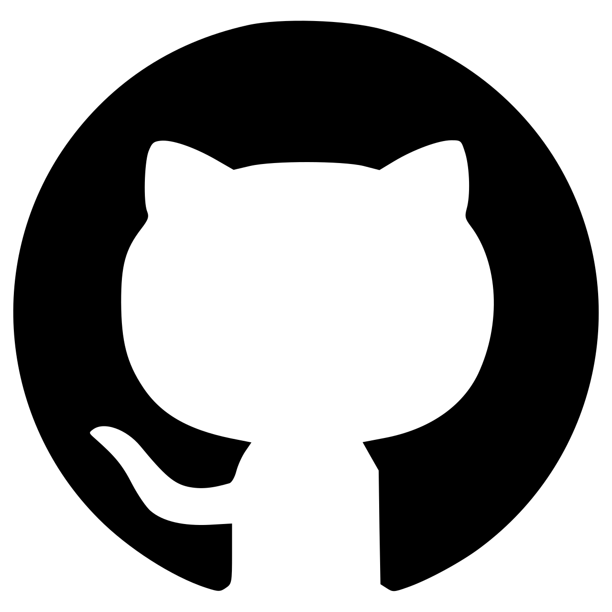
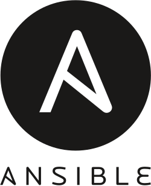
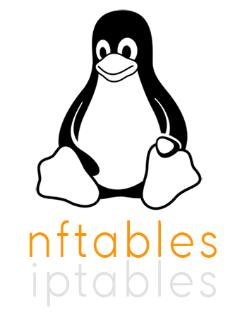
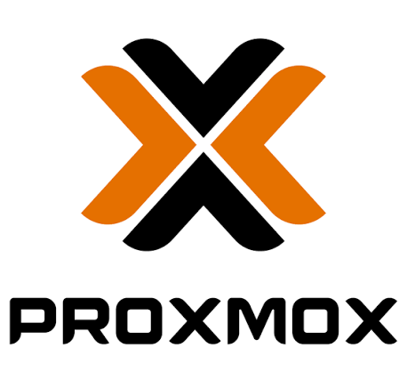
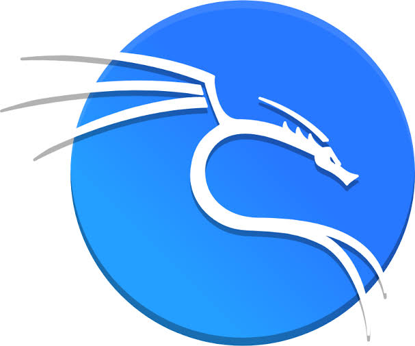

NOAH CONDEMINAS
Bienvenue sur mon portfolio !
A propos
Présentation
Je suis actuellement étudiant au lycée Jean Lurçat en deuxième année de BTS SIO (Services Informatiques aux Organisations) dans l'option SISR (Solutions Infrastructures Systèmes et Réseaux) qui est une option spécialisée pour le réseau.
Actuellement toujours en cours d'étude, je vous propose sur ce portfolio de retrouver ci-dessous les différentes études et projets professionnels que j'ai pu entreprendre durant ma scolarité. Vous retrouverez ci-dessous mon CV ainsi que mes différents projets.
Voir mon cvQu'est-ce que le BTS SIO ?
Le Brevet de Technicien Supérieur en Services Informatiques aux Organisations (BTS SIO) est une formation de niveau Bac+2 destinée à ceux qui souhaitent se spécialiser, en deux ans, dans les métiers d'administrateur réseau ou de développeur. Cette formation peut être suivie soit en alternance, d'une durée de 12 à 24 mois, soit en initial, avec un minimum de 10 semaines de stage en entreprise, réparties sur une période de 2 à 3 mois, afin de se confronter aux réalités du monde professionnel.
Elle propose deux spécialités :
SLAM :
Cette spécialité vous formera à développer des compétences en développement d'applications et de logiciels, à concevoir des bases de données, programmer dans divers langages, tester et déployer des solutions logicielles.
Voici une liste de quelques-uns des métiers principaux accessibles après l'obtention de ce diplôme (SLAM) :
- Analyste-programmeur
- Développeur / Développeuse d'applications mobile
- Technicien / Technicienne informatique
- Développeur / Développeuse web
- Intégrateur web
SISR :
Cette spécialité vous formera sur la gestion, la maintenance des infrastructures réseau. Vous apprendrez à gérer des systèmes d'exploitation, des services réseaux, mais aussi à sécuriser une infrastructure et à proposer des solutions pour optimiser la performance d'un réseau.
Voici une liste de quelques-uns des métiers principaux accessibles après l'obtention de ce diplôme (SISR) :
- Administrateur systèmes et réseaux
- Technicien / Technicienne support
- Technicien / Technicienne réseau
- Gestionnaire d'infrastructures informatiques
- Responsable sécurité des systèmes d'information junior
Mes certifications :
Au cours de mon BTS j'ai suivi l'option Certification, qui m'a permis de passer les certifications suivantes :


Mais aussi d'autres certifications sur OpenClassrooms telles que :
- Découvrez l'univers de la cybersécurité
- Concevez votre réseau TCP/IP
- Administrez une architecture réseau avec CISCO
Mes compétences réseaux :
Ces compétences ont été acquises de différentes façons : certaines durant mes études en BTS SIO, d'autres de ma propre initiative sur mon temps libre.
- Administration et configuration réseau
- Configuration de routeurs et switchs
- Gestion des adresses IP et VLAN
- Plan d'adressage réseau
- Protocoles et services réseau
- TCP/IP, UDP, ICMP
- Services réseau : DNS, DHCP, HTTP, FTP, SMTP
- Protocoles sécurisés : HTTPS, SSH, VPN
- Sécurité réseau
- Pare-feu et filtrage
- Authentification et permissions
- Détection et prévention d'intrusions
- Virtualisation et réseaux d'entreprise
- Réseaux virtuels avec VMware
- Machines virtuelles pour tests
- Réseaux hybrides physique/virtuel
- Documentation et gestion de projet
- Schémas réseau et topologies
- Procédures d'installation et de maintenance
Mes outils

.png)










Mes projets professionnels
Stage deuxième année BTS SIO
Stage première année BTS SIO
Mes projets de BTS
Projet 1 : Interconnexion réseau entre deux sites
Projet 2 : Infrastructure Active Directory
Projet 3 : Haute disponibilité et supervision Linux
Projet 4 : Infrastructure multi-sites sécurisée (Perpignan / Bordeaux)
Mon parcours scolaire
BTS SIO option SISR 2025-2027
BAC GÉNÉRAL spécialités MATHS-NSI 2022-2025
Brevet des collèges 2018-2022
Ma veille technologique
Qu'est-ce que la veille ?
La veille technologique est un processus de collecte, de tri et d'analyse des informations nouvelles et pertinentes dans le domaine de la technologie. Elle permet à une entreprise ou un individu de rester informé des dernières tendances, innovations et avancées technologiques qui peuvent influencer leur secteur d'activité.
En d'autres termes, faire de la veille, c'est être constamment à l'affût des nouveautés. Cela implique de consulter divers canaux d'informations, d'analyser les données recueillies, et de les appliquer de manière stratégique pour anticiper les évolutions et rester compétitif.
Les principaux outils de ma veille
J'ai effectué ma veille technologique grâce à Feedly, un agrégateur de flux RSS.
Sujet de ma veille
Pour ma veille technologique, j'ai décidé de traiter le sujet des cyberattaques et de la protection des réseaux.
À travers ces 3 thèmes :
Thème 1 : Quelles sont les différentes cyberattaques ?
J'ai classé les attaques selon ce qu'elles visent : la disponibilité d'un service, les utilisateurs, les données et les communications.
Cible : la disponibilité. Une attaque DDoS (déni de service distribué) sature un serveur ou un réseau avec un trafic massif venant de nombreuses machines, pour le rendre indisponible aux utilisateurs légitimes.
Cible : les utilisateurs. Des messages malveillants exploitent l'ingénierie sociale pour soutirer des identifiants ou des données sensibles. Variantes : spear phishing (victime ciblée), smishing (SMS), vishing (appel vocal) et fraude au président. Parade : ne pas cliquer sur les liens, former les utilisateurs et filtrer les e-mails.
Cible : les données. Un rançongiciel bloque les données d'une organisation et réclame une rançon. L'ANSSI note que ces attaques augmentent en nombre, en fréquence et en sophistication, et qu'elles peuvent menacer la continuité d'activité, voire la survie de la victime.
Cible : les données d'une application web. Une donnée saisie par l'utilisateur modifie la requête envoyée à la base de données : l'attaquant peut contourner l'authentification, puis extraire, modifier ou supprimer des données. Parade : requêtes préparées, validation des entrées et moindre privilège sur la base.
Cible : les communications. L'attaquant s'interpose entre deux correspondants pour lire, voire modifier leurs échanges, par exemple par empoisonnement ARP sur un Wi-Fi public, ou par usurpation DNS. Parade : VPN sur les réseaux publics et authentification à deux facteurs.
Vue d'ensemble. Publié le 11 mars 2026. Espionnage et sabotage d'infrastructures critiques, hausse des vols de données, et compromission des équipements en bordure de réseau (pare-feu, VPN), très recherchés car souvent vulnérables.
Thème 2 : Peut-on réellement se protéger des cyberattaques ?
En 2025, l'ANSSI a traité 3 586 événements de sécurité, soit 18 % de moins qu'en 2024, mais la menace reste élevée et plus diffuse. Elle insiste sur l'application des mesures de base, notamment avec la directive NIS 2.
Thème 3 : Quelles pratiques pour se protéger ?
Un guide de 42 mesures, de niveau standard ou renforcé, pour sécuriser le système d'information d'une organisation, avec le travail nomade et la séparation des usages.
Ce que j'ai mis en pratique : pare-feu pfSense et OPNsense, VPN IPsec, segmentation en VLAN avec règles de pare-feu selon le moindre privilège, sauvegardes automatisées avec RAID 1, supervision avec Zabbix, et coffre-fort de mots de passe en stage.
Contact
Me contacter
Une question, une proposition ou simplement envie d'échanger ? Voici comment me joindre.